| 日付 | 2015年1月11日（日） |
|---|---|
| 山域 | 奥多摩 |
| メンバー | 単独 |
| 山行形態 | 日帰り |
| アクセス | 電車、バス |
| ルート (Map) | 東日原 (7:54) - (9:27) 一杯水避難小屋 - (9:46) 天目山 - (10:32) 七跳山 - (11:28) 酉谷山 - (12:18) タワ尾根下降点 - (12:48) ウトウの頭 - (13:29) 人形山 (13:43) - (14:15) 一石山神社 - (14:43) 東日原 |
妻と子供が車で出かけているため、久々に電車で山に行くことにする。
選んだのは酉谷山。奥多摩の最深部にある山だ。
本当の奥多摩最深部は、東京都の最高峰である雲取山なのだが、
人気の山であるため、あまり山奥深いという印象を受けない。
一方、酉谷山は人の訪れが少なく、奥多摩最深部と言うにふさわしい山である。
奥多摩駅に到着。昔は何度も乗った電車だが、
朝早くに多くの登山者に囲まれて電車に乗るのは久々であり新鮮な体験だった。
奥多摩駅に来るのは和名倉山に登った時以来、実に4年半振りだ。
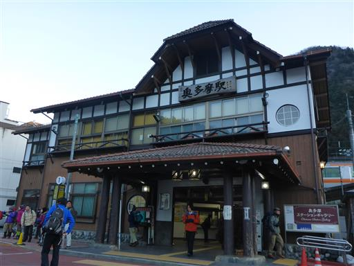
バスに乗って東日原バス停に到着する。標高620m。
バスは満員だったが、川乗橋で7割が降車、恐らくは川苔山に向かうのだろう。
終点のここで、残り3割が降りたが、全員が日原方面に歩いていく。
ほとんどは鷹ノ巣山に向かうのだろう。
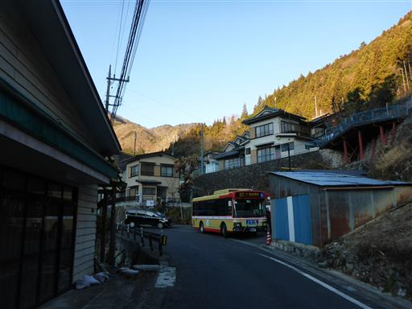
天目山方面に向かったのは自分一人だけ。
今日の帰りは14:50のバスに乗る予定なので、歩けるのは7時間弱。
あまり時間がないので、速足で歩き始める。
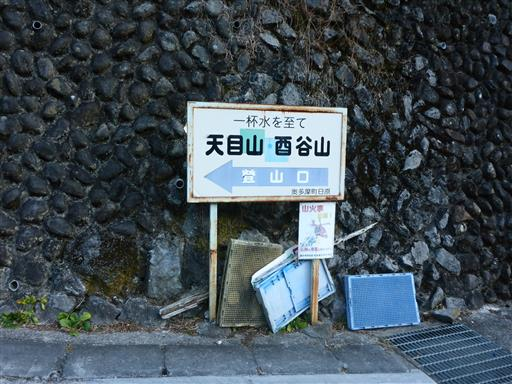
歩く人は少なそうだが、道の整備状況は良い。
少し登ったところに数件家が建っている。もう人は住んでいないかもしれない。
いずれにせよ、すごい場所に家を建てたものだ。
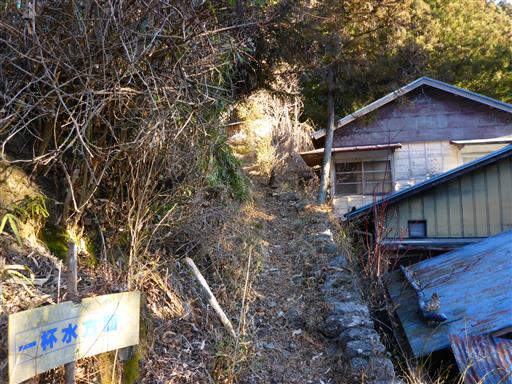
最初は杉の植林地帯が続く。
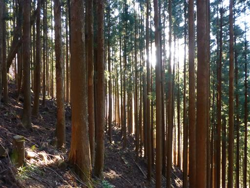
落ち葉の量がすごい。くるぶし位まで足が埋まる。
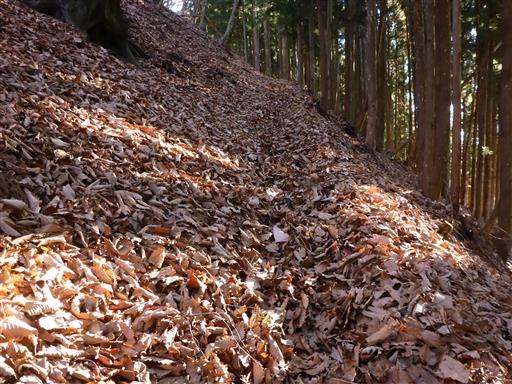
一回転した杉。植林された木なのに不思議な形をしている。
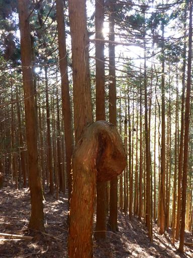
しばらくトラバース道が続く。狭い道に落ち葉が積もっていて歩きにくい。
上部には大きな石が転がっており、落ちてきそうで少々怖い。
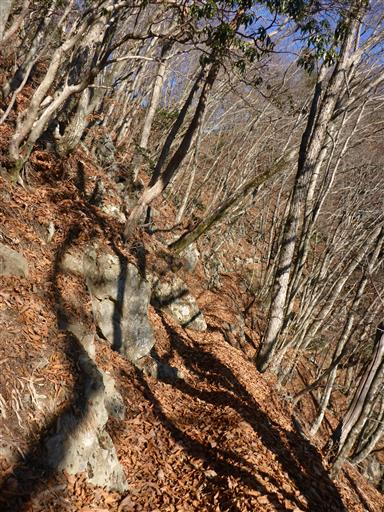
小さなピークを巻いて、ようやく尾根道になる。案外痩せ尾根だ。
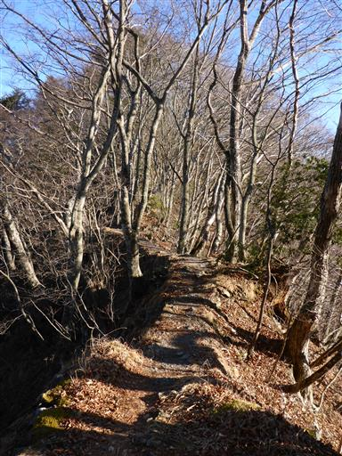
歩きやすいように木の根が切られている。
特に危険な場所でもないのに足場を作るために根を切られるとは、何とも可哀想だ。
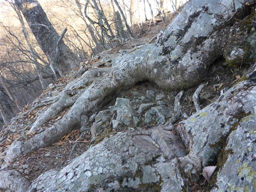
鳥が木をたたく音が聞こえてくる。キツツキだ。
音は何度も聞いたことがあるが、観察できたのは初めてだ。
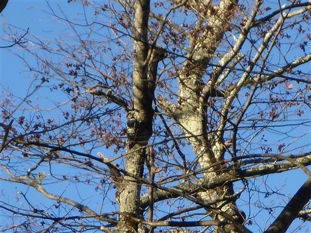
標高を上げると、少し雪が現れ始める。
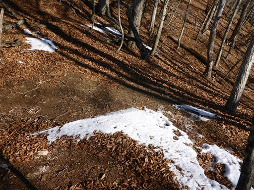
一杯水避難小屋に到着。
かなりの速足で登ってきたため、もうすでに足が疲労気味だ。
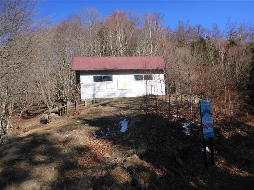
小屋の中は非常にきれいだ。
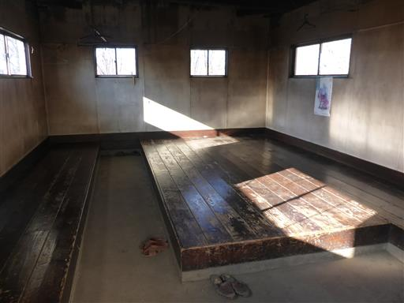
小屋前の標識には、まさかの小川谷林道通行止めの案内。
下山に使おうと思っていた道を絶たれてしまった。
東日本大震災以降に通行止めになったとのことで、完全に情報収集不足だった。
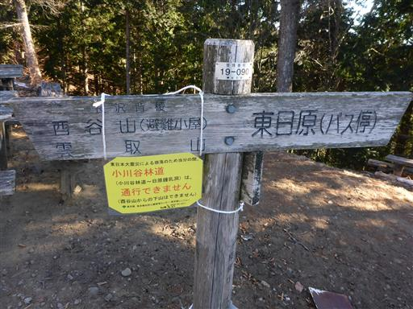
とりあえず今は先に進むしかない。
標識には天目山を示す表示がなかったが、小屋の裏にある踏み跡を登っていく。
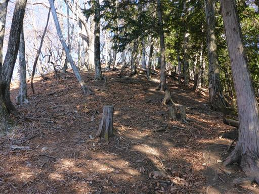
登山道には薄らと雪が付いていて嫌らしい。
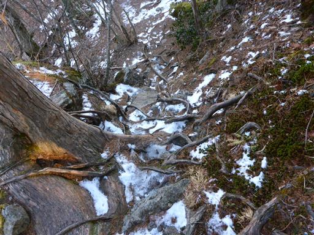
一登りで天目山に到着する。標高1576m。
別名三ツドッケ。誰もいない山頂だ。
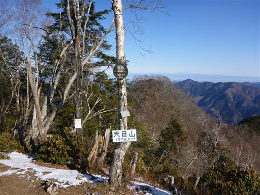
ここは360度の大展望台。鷹ノ巣山の奥に富士山がはっきり見える。
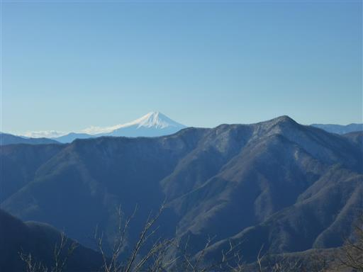
左の方に見えるのが東京都の最高峰・雲取山だ。
もう一度行きたい山だが、2007年以降、再訪の機会がない。
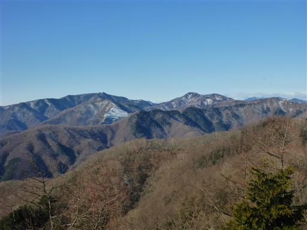
遠くに丹沢の山々。その左には相模湾が光っている。
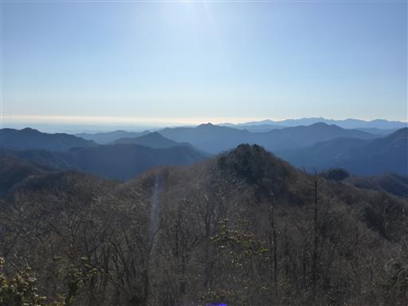
こちらは筑波山。空気の澄んだ日にしか見えない山だ。
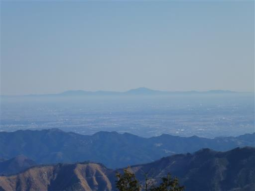
なんと、男体山をはじめとする日光の山々も見えている。
手前にあるのは名峰・武甲山だ。
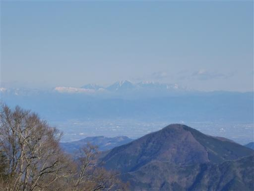
最高の展望を満喫したら、あまり時間がないため山頂を出発する。
天目山は人の訪れが少ないが、手軽に登れて展望も素晴らしい山だ。
東日原から登れる山としては鷹ノ巣山に人気が集中しているが、
この山はもっと評価されても良いだろう。
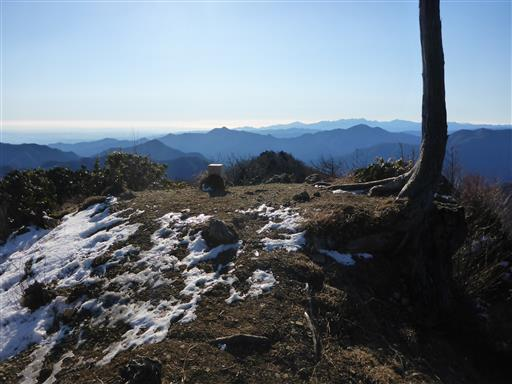
天目山から先は長沢背稜と呼ばれる尾根道が続く。
天目山の迂回路と合流後は、全てのピークを迂回し、ずっとトラバース道が続く。
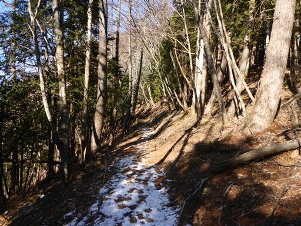
全くピークを踏まないのも今一なので、
トラバース道から外れて七跳山に続く斜面を登ってみる。
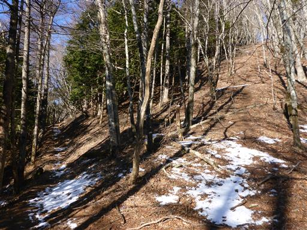
標識は見当たら無いが恐らくここが七跳山。標高1651m。
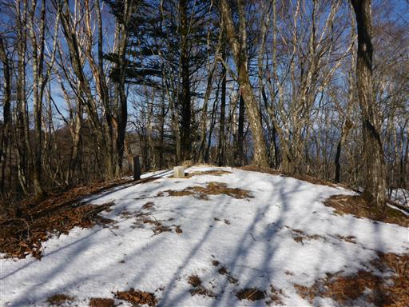
山頂付近は二重山稜になっていて、少々地形が複雑だ。

樹林の間から少しだけ展望がある。
左のピークが目指す酉谷山だ。だいぶ近づいてきた。
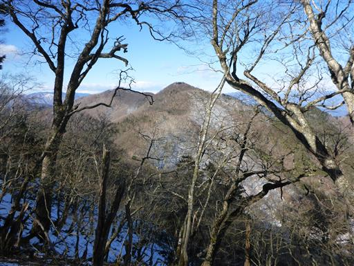
七跳山を下りると、再びトラバース道が続く。
雪が付いている時はトラバース道より尾根道の方が歩きやすい。
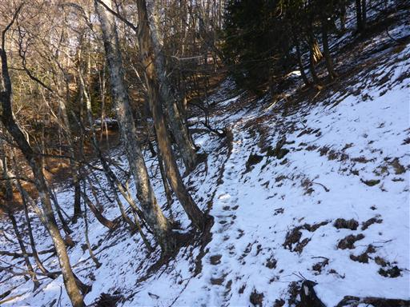
急な斜面には木の橋が架けられている。
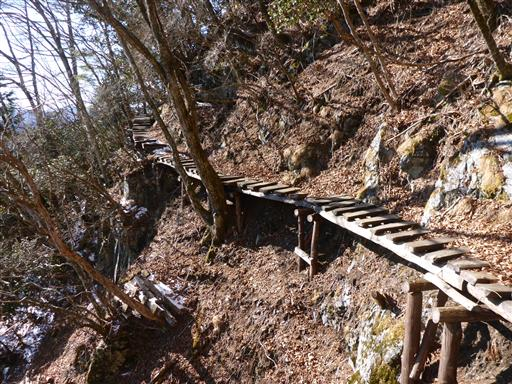
酉谷避難小屋に到着。
中は覗かなかったが、ここも良さそうな避難小屋だ。
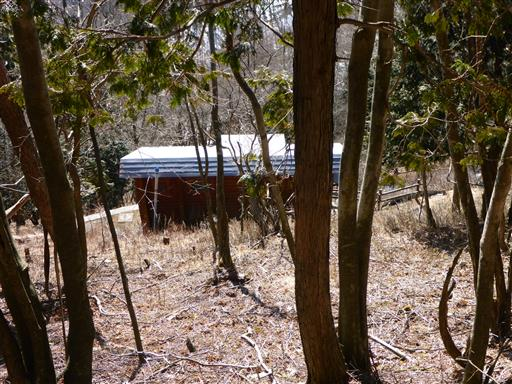
ここから斜面を少し登って稜線に上がる。
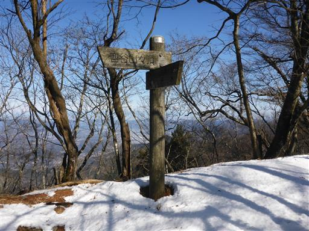
南斜面にあるトラバース道と比べると、尾根上は雪が多い。
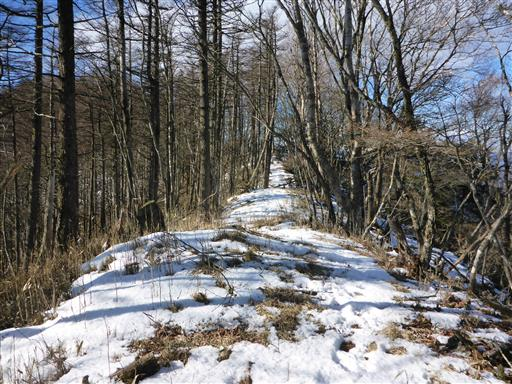
少しの登りで酉谷山に到着する。標高1718m。
静かで地味な山頂だ。歩き始めてからここまで、一人の登山者にも出会っていない。
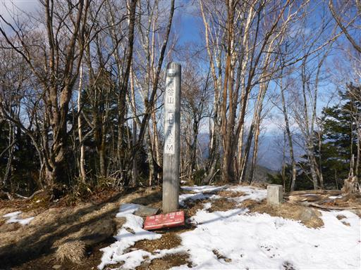
樹林に囲まれ展望は少ししかない。
さて、ここからどの道を下るかを決めなければならない。
天祖山経由で下山すると14:50のバスにはまず間に合わない。
このバスに乗り遅れると、次のバスは1時間半後のため、帰りがかなり遅くなってしまう。
仕方がないので、一般的な登山道ではないが、タワ尾根を下山することにする。
アップダウンが少なく、まっすぐな尾根なので、案外小川谷林道よりも速いかもしれない。

下山道が決まったら足早に歩きだす。
右手には意外な近さに、一目でそれと分かる両神山が聳えている。
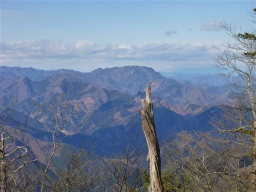
グネグネ曲がるトラバース道。西側の斜面は完全な雪道だ。
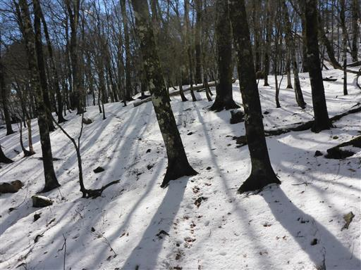
前方に見えてきたのが恐らくタワ尾根の頭。
トラバース道は現在地把握が難しい。地形図とコンパスを持って来たのは大正解だった。
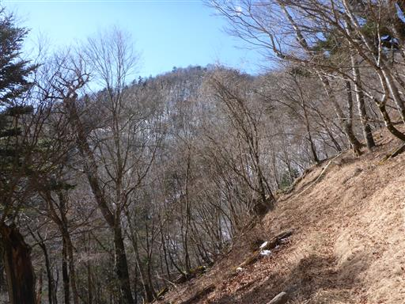
分岐するいくつかの尾根を見送って、タワ尾根らしき場所にたどり着く。
辺りを見回しても、分岐点を示す標識ひとつない。
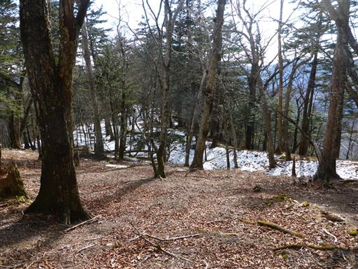
尾根に続く薄い踏み跡を追って下山を開始する。
下り始めるとすぐにレールが現れる。このレールを追っていくだけで下山できるかもしれない。
これは楽勝だ。レールがなくなった時に備えて、現在地を見失わないように注意しながら下っていく。
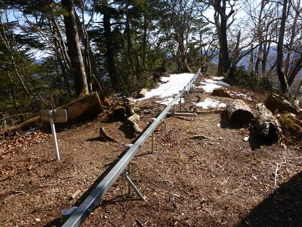
途中で登山者一人とすれ違う。
「下りですか。気をつけて。」と声を掛けられる。やはりこの尾根を下るのは一般的でなさそうだ。
大きな荷物を背負っているので、酉谷避難小屋か、雲取山で泊まるのだろう。
結果的に、本日出会った唯一の登山者だった。
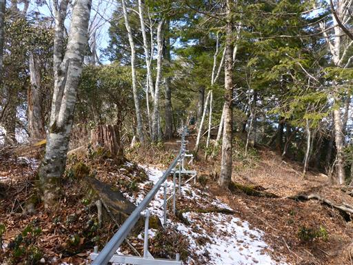
しばらく下ると、レールはあらぬ方向に向かっていく。考えが甘かったようだ。
時間がないため、地形図を正確に読みつつ、高速に下って行く必要がある。
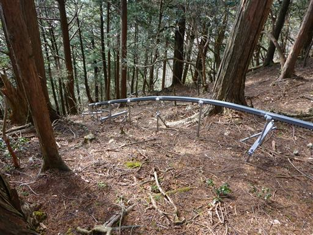
途中から岩がちな地形になってくる。案外険しい尾根だ。
このような岩尾根が続くようだと時間がかかり過ぎてしまう。
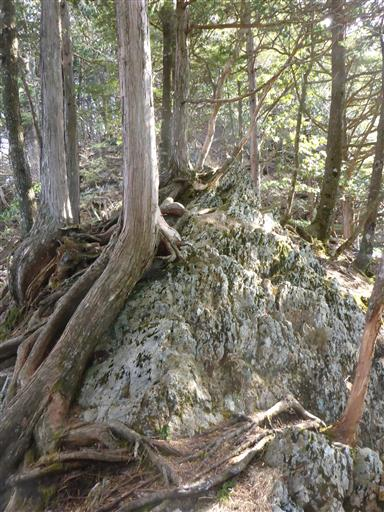
タワ尾根上の小ピーク・ウトウの頭に到着する。
ここが確実にタワ尾根であることが確認できた。
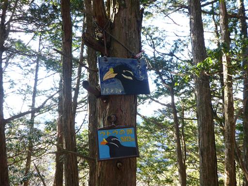
下山時に迷い込みやすそうな場所にはロープが張られている。
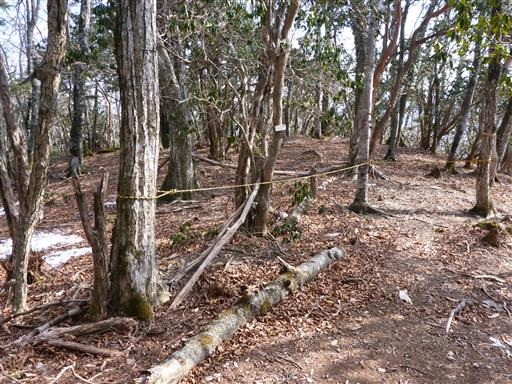
有難いことに尾根は緩やかになってくる。
こうなると結構スピードが出せる。
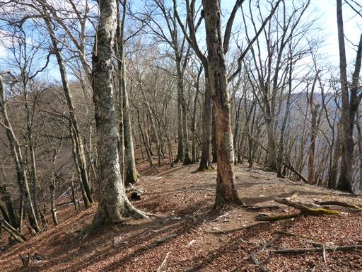
篶坂ノ丸を通過。小さな小さなピークだ。
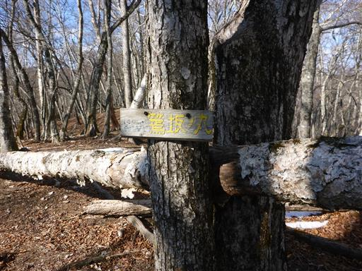
続いて金袋山を通過。ただの斜面で、ピークですらない。
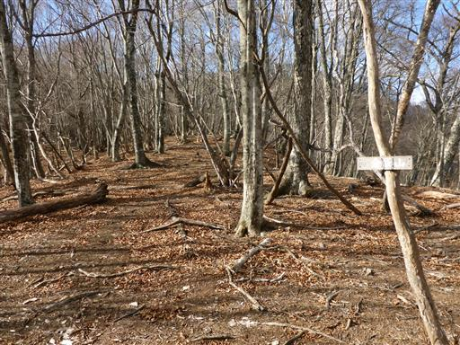
続いて人形山に到着。ここまで来れば下界まで登山道がついている。
バスに間に合う目処もついた。
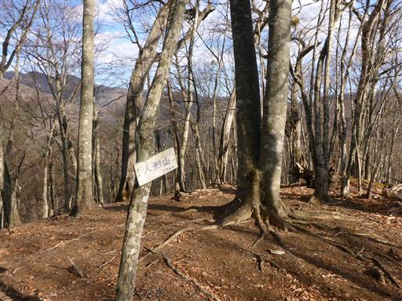
人形山はミズナラの巨木があることで有名。周りをぐるっと見回したが見つからない。
周囲の地形は少々複雑で、辺りをうろうろして、ようやく見つけられた。
もっと大きいのを想像していたので、発見に時間がかかってしまった。
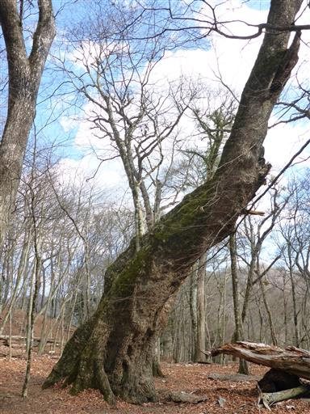
ウッドサークル。木を守るために、これより中には入らないよう記されている。
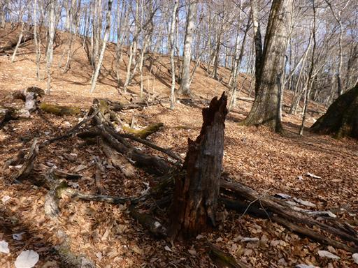
下から見た方が迫力ある。
かなり斜めに幹を伸ばしているため、姿勢維持が大変そうだ。
大枝が折れて、地面に横たわっている。2013年8月に折れてしまったようだ。
そろそろ寿命だろうか…？
後は杉の植林地帯を下る。かなりの急斜面で、落ち葉がよく滑る。
植林地帯なのに、何故こんなに落ち葉が多いのだろう？
白くてきれいな岩が見えてくる。
小川谷の対岸に見える岩頭は梵天岩だ。
下っても下っても白い岩が続いている。
見上げるとこちらに覆いかぶさっているようだ。かなりの大岩壁である。
登山道入口付近に標識がある。
ミズナラの案内と供に悪路と記されている。確かに人形山からの下山路は悪路だった。
一石山神社に到着。ご神体は裏の岩壁だろう。
これだけの大岩だから、昔から崇拝されるのも無理はない。
一石山神社の入口に下山する。
ここは以前訪れた日原鍾乳洞のある場所だ。
改めて車道から大岩壁を眺める。この岩壁は燕岩と名付けられている。
下の車道が小川谷林道で、こちら側も通行止めになっている。
あとは疲れた足で車道をとぼとぼ歩いてバス停を目指す。
登りも下りも速足で歩いたため、かなり足が疲労している。
橋から小川谷を望む。
あれだけの大岩壁があるなら、小川谷林道歩きも楽しそうだが、
もう廃道になるかもしれない。
右手に稲村岩が見えてくる。
日原の集落。かなり山奥の集落なのだが規模は大きい。
東日原バス停に戻ってくる。最後は時間に余裕を持って下ってくることができた。
今回はかなり忙しい登山になってしまった。
次は天祖山経由でもう少しゆっくりと登りたいものだ。